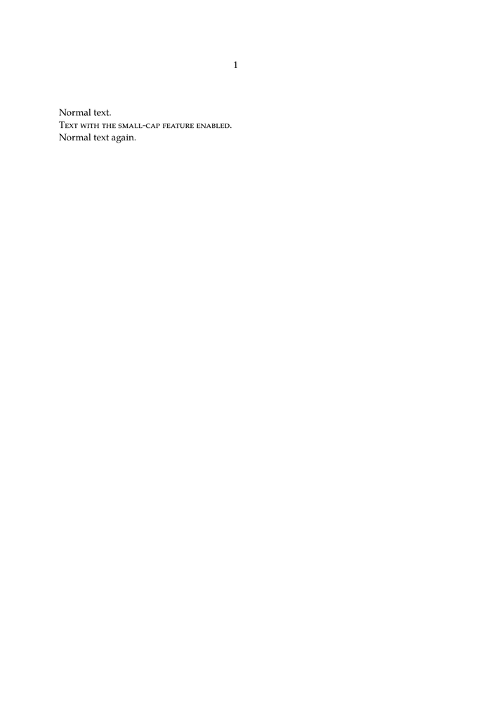

This page has recently been revised and reorganized.
Further corrections, additions, and improvements are welcome. Please feel free to edit or modify this page to improve it.
Contents
-
1
OpenType features in ConTeXt
- 1.1 1. OpenType feature and ConTeXt feature set
- 1.2 2. Defining a feature set
- 1.3 3. Applying a feature locally
- 1.4 4. Combining several features
- 1.5 5. Modifying the active feature set
- 1.6 6. Script and language information
- 1.7 7. Inspecting and debugging OpenType processing
- 1.8 8. Common OpenType feature tags
- 1.9 9. Ligatures
- 1.10 10. Advanced: adding OpenType behaviour
- 1.11 11. Historical syntax
- 1.12 12. Troubleshooting
- 1.13 13. Related pages
Modern OpenType fonts can contain much more than a collection of glyphs. They may also contain instructions for selecting or positioning glyphs in particular contexts.
Examples include:
-
standard ligatures such as
fiandfl; - small capitals;
- oldstyle or lining figures;
- proportional or tabular figures;
- discretionary ligatures;
- stylistic alternates;
- stylistic sets;
- script- and language-specific substitutions.
ConTeXt can activate these OpenType features and combine them into named sets that can be applied globally or locally.
This page explains the distinction between an OpenType feature and a ConTeXt feature set, shows the basic commands used to control them, and provides a reference to common OpenType feature tags.
For general font selection and configuration, see Use any font you want.
1. OpenType feature and ConTeXt feature set
There are two related but distinct concepts.
- OpenType feature
-
A capability provided by the font itself and identified by a standard tag such as
liga,smcp,onum, orss01.
- ConTeXt feature set
- A named collection of one or more OpenType features, defined with \definefontfeature .
For example:
-
\setupbodyfont[pagella] \definefontfeature [myoldstyle] [onum=yes, lnum=no] \starttext Default figures: 1234567890 {\feature[+][myoldstyle] Oldstyle figures: 1234567890} \stoptext
Here:
-
onumandlnumare OpenType feature tags; -
myoldstyleis the name of a ConTeXt feature set.
Important.
A ConTeXt feature set does not create capabilities that are absent from
the font. For example, smcp=yes can activate real small
capitals only if the font provides the corresponding OpenType feature
and glyphs.
2. Defining a feature set
A feature set is defined with \definefontfeature.
For example:
\definefontfeature [mysmallcaps] [smcp=yes]
A feature set may contain more than one OpenType feature:
\definefontfeature [bookfigures] [onum=yes, pnum=yes]
This makes it possible to give a meaningful name to a typographical configuration and reuse it later.
3. Applying a feature locally
A defined feature set can be added locally with \feature.
-
\setupbodyfont[pagella] \definefontfeature [mysmallcaps] [smcp=yes] \starttext Normal text. {\feature[+][mysmallcaps] Text with the small-cap feature enabled.} Normal text again. \stoptext
-

The feature change is local when it is placed inside a group.
4. Combining several features
A feature set can contain several OpenType features:
-
\setupbodyfont[pagella] \definefontfeature [bookstyle] [onum=yes, lnum=no, pnum=yes] \starttext Default: 1234567890 {\feature[+][bookstyle] Book style: 1234567890} \stoptext
Several named feature sets may also be combined where appropriate.
\feature[+][smallcaps,oldstyle]
Note.
The result depends on the features actually provided by the selected font. Not every OpenType font contains every feature listed on this page.
5. Modifying the active feature set
ConTeXt provides several commands for changing the current set of font features.
The following forms are equivalent ways of expressing the same operations:
| Action | Command | \feature form | Short form |
|---|---|---|---|
| Add | \addfeature[f:mine]
|
\feature[more][f:mine]
|
\feature[+][f:mine]
|
| Subtract | \subtractfeature[f:mine]
|
\feature[less][f:mine]
|
\feature[-][f:mine]
|
| Replace | \replacefeature[f:mine]
|
\feature[new][f:mine]
|
\feature[=][f:mine]
|
| Reset and add | \resetandaddfeature[f:mine]
|
\feature[local][f:mine]
|
\feature[!][f:mine]
|
| Restore | \revivefeature[f:mine]
|
\feature[old][f:mine]
|
\feature[>]
|
| Reset | \resetfeature
|
\feature[reset]
|
\feature[<]
|
| TODO: Retest all long and short forms in a current LMTX installation and
confirm their recommended use before removing this note. (See: To-Do List) |
6. Script and language information
Some OpenType processing depends on the script or language for which a font is being used.
Older examples often contain definitions such as:
\definefontfeature [example] [mode=node, script=latn, language=dflt, kern=yes, liga=yes]
The script and language keys describe the
OpenType script and language system used while processing the font.
They should not be confused with ConTeXt document-language settings such as \mainlanguage or \language.
For the distinction between document language, script, font, and writing direction, see:
| TODO: {{{1}}} (See: To-Do List) |
7. Inspecting and debugging OpenType processing
OpenType processing can become difficult to understand when several features, scripts, fallbacks, or substitutions interact.
One useful diagnostic command is \showotfcomposition.
For example:
\showotfcomposition {mikhak-medium*arabic} {-1} {سلام علیکم}
The second argument can be used to indicate direction; the example above is for right-to-left text.
For general right-to-left and bidirectional typesetting, see the dedicated RTL/BiDi documentation.
A feature may also fail to behave as expected when some of the relevant glyphs come from a fallback font rather than from the font whose OpenType lookups are being applied.
| TODO: Retest the existing Mikhak fallback example with current LMTX and
decide whether it belongs here as an advanced debugging example or on a separate fallback page. (See: To-Do List) |
8. Common OpenType feature tags
OpenType features are identified by four-character tags.
The following table lists some common examples.
These features are not guaranteed to exist in every font.
8.1 Ligatures and contextual forms
| Feature | Tag |
|---|---|
| Standard ligatures | liga
|
| Contextual alternates | calt
|
| Discretionary ligatures | dlig
|
For more detailed control of ligatures, see Ligatures.
8.2 Letter forms
| Feature | Tag |
|---|---|
| Small capitals | smcp
|
| Capitals to small capitals | c2sc
|
| Swashes | swsh
|
| Stylistic alternates | salt
|
8.3 Figures
| Feature | Tag |
|---|---|
| Lining figures | lnum
|
| Oldstyle figures | onum
|
| Proportional figures | pnum
|
| Tabular figures | tnum
|
| Fractions | frac
|
| Ordinals | ordn
|
8.4 Stylistic sets
OpenType defines stylistic-set tags from:
ss01 through ss20.
A font may provide none, some, or all of these sets.
The visual meaning of a particular stylistic set is defined by the font designer and therefore varies from font to font.
8.5 East Asian OpenType features
OpenType also defines features for East Asian typography.
Common examples include:
| Area | Feature | Tag |
|---|---|---|
| Width | Proportional widths | pwid
|
| Width | Proportional alternate widths | palt
|
| Width | Proportional kana | pkna
|
| Width | Full widths | fwid
|
| Width | Half widths | hwid
|
| Width | Alternate half widths | halt
|
| Width | Third widths | twid
|
| Width | Quarter widths | qwid
|
| Japanese forms | JIS78 forms | jp78
|
| Japanese forms | JIS83 forms | jp83
|
| Japanese forms | JIS90 forms | jp90
|
| Japanese forms | JIS2004 forms | jp04
|
| Cultural variants | Traditional forms | trad
|
| Cultural variants | Ruby notation forms | ruby
|
| Cultural variants | Horizontal kana alternates | hkna
|
| Cultural variants | NLC kanji forms | nlck
|
| Cultural variants | Alternate annotation forms | nalt
|
| Vertical | Vertical kerning | vkrn
|
| Vertical | Vertical alternates | vert
|
| Vertical | Proportional alternate vertical metrics | vpal
|
| Vertical | Alternate vertical half metrics | vhal
|
| Vertical | Vertical kana alternates | vkna
|
For CJK font selection and multilingual documents, see the relevant language and font guides.
9. Ligatures
Ligatures are one application of OpenType features.
Standard and discretionary ligatures are commonly controlled through features such as:
liga=yes dlig=yes
Detailed questions such as:
- breaking a ligature at a particular position;
- language-specific ligature suppression;
- \noligature ;
- word-replacement dictionaries;
- \blockligatures ;
belong to the dedicated page:
10. Advanced: adding OpenType behaviour
In advanced applications it is possible to add or modify OpenType behaviour beyond the ordinary activation of features already defined in a font.
Several mechanisms have been used in ConTeXt.
10.1 Lua-defined features
Low-level Lua interfaces can define additional OpenType features.
Older examples use functions such as:
font.handlers.otf.addfeature
This is an advanced mechanism and normally is not needed merely to activate an existing OpenType feature.
| TODO: Verify the current LMTX interface and documentation for defining
OpenType features from Lua. (See: To-Do List) |
10.2 Font goodies
Font-specific settings and additional behaviour can be stored in a
ConTeXt font-goodies file, normally using the .lfg
extension.
Such a file can be associated with a font through its goodies settings.
| TODO: Check the current font-goodies documentation and replace historical
MkIV links with current examples where available. (See: To-Do List) |
10.3 OpenType feature files
External OpenType feature files in .fea format can also be
used in appropriate workflows.
See Fontfeaturefiles.
| TODO: Verify the current LMTX syntax for loading feature files. (See: To-Do List) |
11. Historical syntax
Older MkIV documents may contain commands such as:
\addff{featureset} \subff{featureset} \addfs{featureset} \subfs{featureset}
These belong to an earlier version of the font-feature interface and should not be used as the starting point for new LMTX documents.
They are mentioned here only to make older source files easier to read.
| TODO: Confirm the present status of these commands in LMTX and whether
they should remain documented here or be moved to a historical note. (See: To-Do List) |
12. Troubleshooting
If an OpenType feature does not produce the expected result, check the following points.
- Does the font actually provide the feature?
- Not every font contains small caps, oldstyle figures, stylistic sets, discretionary ligatures, or other optional features.
- Are the required glyphs in the same font?
- Some OpenType lookups depend on glyphs belonging to the font whose feature processing is active. Fallback fonts can therefore affect the result.
- Is the correct script being processed?
- Some OpenType features are script-specific.
- Is the language relevant?
- Certain fonts contain language-specific substitutions.
- Is another feature overriding the requested feature?
- For example, lining and oldstyle figure settings may interact.
- Is the example inherited from an older MkIV setup?
- Historical recipes may contain settings that are unnecessary or no longer recommended in current LMTX.
For general font problems, see Use any font you want.